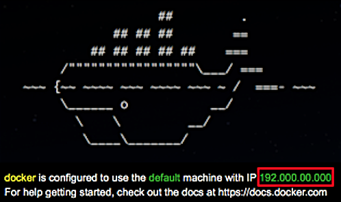
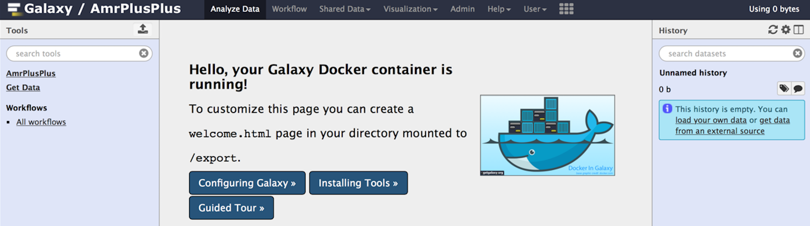
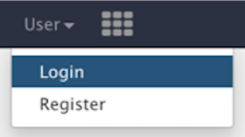

Installation
The following installation will take approximately 30 minutes.
Software Requirements
To install Docker, you will need access to one of the following operating systems:
- Mac OS X (10.8 or above)
- Linux 64-bit
Docker
Install via Docker
Why Install via Docker?
- Docker packages an entire piece of software into its own filesystem.
- Docker rids users of dependency nightmares caused by complex software.
Step 1
Download Docker
Mac Users: Follow the instructions here. Linux Users: Follow the instructions here.
Note
You must have sudo privileges to install Docker via Linux.
Step 2
Start Docker with a Mac
Open your Launchpad, and click on the DockerQuickStart icon. This will open a terminal and start Docker using a default virtual machine. Be sure to take note of the IP address (highlighted in red) Docker was started on.
The IP address will be different than the one highlighted below.

To launch your Galaxy instance, type this exact command into the terminal (omitting the '$' sign):
$ docker run -d -p 8080:80 -p 8021:21 chrisd/amrplusplus
Start Docker with Linux
Open a terminal, and type these exact commands (omitting the '$' sign):
$ sudo service docker start
$ sudo docker run -d -p 8080:80 -p 8021:21 chrisd/amrplusplus
Note
When running these commands for the first time, Docker will go out and look for the chrisd/amrplusplus repository and download the latest AmrPlusPlus Docker image. When the install completes, you should see a message similar to the one below.
$ Digest: sha256:7e992b68ddb9a2e37a9f2b862de015445912d20cc98d13970603939330b0433e
$ Status: Downloaded newer image for chrisd/amrplusplus:latest
$ 10ab4d35cf798a2e46a0ec4e2eaf15377c3558772b3f5d0e1107025a9b922f76
If you see this message, that means the latest version of the pipeline was downloaded successfully and is currently running on your machine.
Step 3
Connecting to the Server on a Mac
Open a web browser, and navigate to:
http://default-ip:8080
Warning
Replace deafult-ip with the IP address Docker was started on. For example, if the IP address was 192.000.00.000, then you would enter http://192.000.00.000:8080 into your web browser. If you forgot the IP address, you can find it by scrolling to the top of your terminal.
Connecting to the Server on Linux
Open a web browser, and navigate to:
localhost:8080
Once connected, you should see a page similar to the following:

Step 4
Log in to Server
Next, we need to login. From the navigation bar at the top of the Galaxy homepage, click on the User tab and goto Login.

In the Username field, enter admin@galaxy.org and in the Password field, enter admin and click on the Login button.

Step 5
Import Workflow
Next, we need to Import the Workflow.
Galaxy
Install via Galaxy
Before You Begin
If you installed Galaxy via Docker, you do not need to read this section. Galaxy comes installed when you run Docker. See the Import Workflow for next steps.
This section is only for those who have a production Galaxy server and wish to download the AmrPlusPlus pipeline via the Galaxy Main Toolshed.
Software Requirements
- Production Galaxy Server
- Admin account
- GNU Make and GCC compiler
Tool Installation
- Log in to your Galaxy server with your admin account.
- Find the admin tab in the navigation bar -> Search Tool Shed -> Galaxy Main Toolshed ->Browse Valid Repositories -> Metagenomics -> suite_amrplusplus -> Preview and Install.
- Click on the Install button at the top of the page.
- Make sure the Handle Repository Dependencies and Handle Tool Dependencies boxes are checked.
- In the Add New Tool Section Panel, enter AmrPlusPlus into the text box.
- Click on the Install button at the bottom of the page.